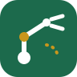

ServoLab
Robot kolunun servolarını tarayıcıdan sür: her servoyu kalibre et, pozları kaydedip oynat ve hareketi çalışan bir Arduino sketch'ine dönüştür. Kurulum gerekmez.
- 2–6 servo: açı sınırı, 400–2600 µs darbe aralığı, ters çevirme, ev açısı
- Canlı kol önizlemesi ve poz zaman çizelgesi (doğrusal ya da yumuşak geçiş, JSON dışa/içe aktarma)
- Servo.h kodu ve alıcı sketch'ler üretir: Uno, ESP32, USB, HC-05, ESP32 BLE
- USB (Web Serial) ve BLE (Web Bluetooth) ile bağlanır; çevrimdışı çalışır. HC-05 klasik Bluetooth olduğu için tarayıcıdan bağlanamaz, sayfada yolu anlatılıyor
Web · Chrome / EdgeAç →